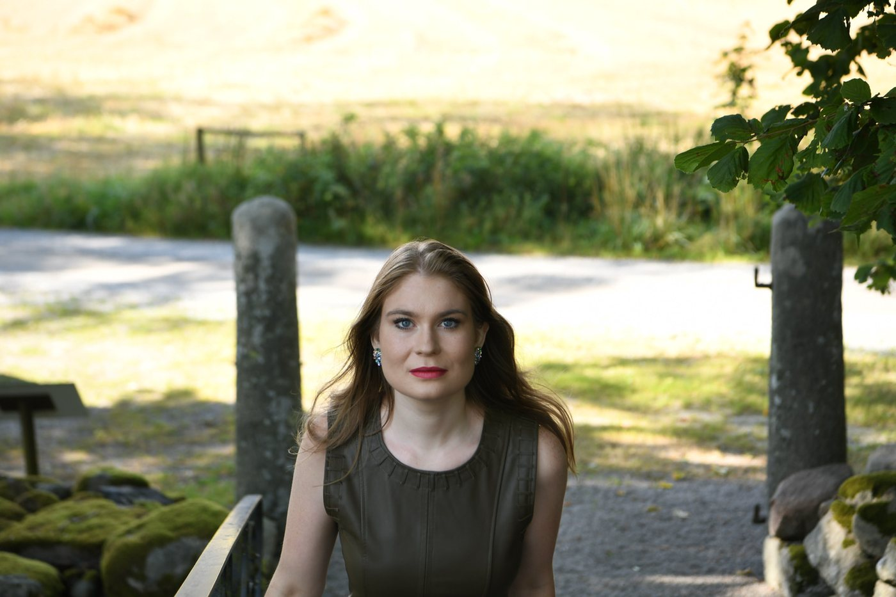
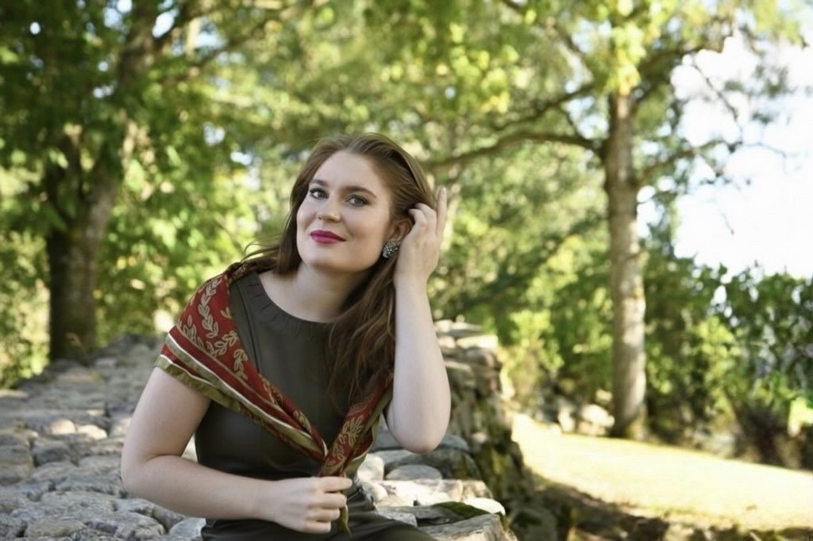
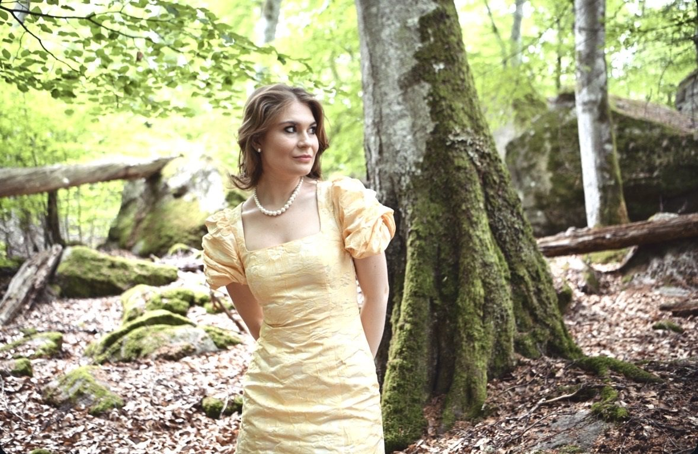
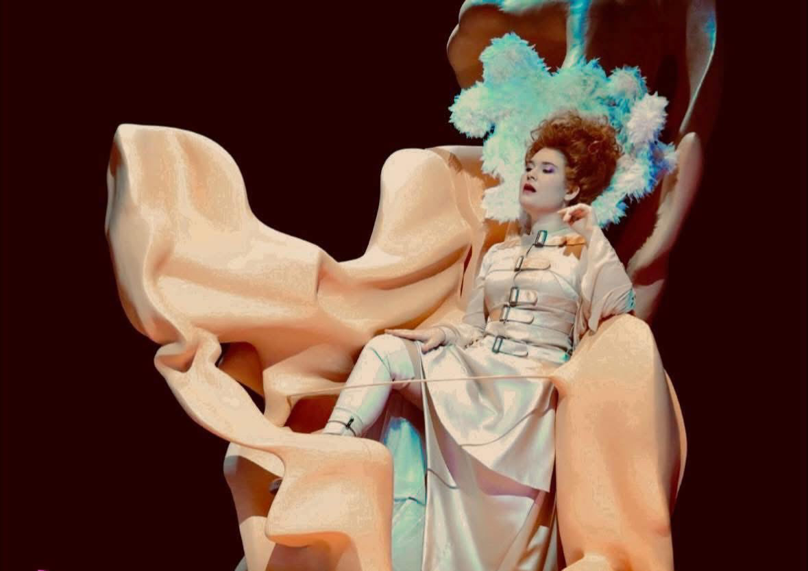

Från Huseby · Oper Frankfurt
Karolina Bengtsson
Svensk sopran. Birgit Nilsson-stipendiat 2025.
Hon svär evig trohet igen. Kväll efter kväll.
Fiordiligi

Säsong
Alla föreställningar på Oper Frankfurt. Biljetter och datum på oper-frankfurt.de (öppnas i ny flik).
Biografi
Karolina Bengtsson föddes 1997 och växte upp i Huseby, ett brukssamhälle i Småland. Hon studerade vid Det Kongelige Danske Musikkonservatorium i Köpenhamn och tog masterexamen för Barbara Bonney vid Universität Mozarteum Salzburg 2023; Wolfgang Holzmair handledde hennes romansinterpretation.
Hon gick med i Oper Frankfurts Opera Studio 2021 och har sedan 2023 tillhört solistensemblen. Gästspel har fört henne till Bayerische Staatsoper i München, Festival d’Aix-en-Provence och Innsbruck Festival of Early Music, och i konsert till Sveriges Radios Symfoniorkester och Göteborgs Symfoniker.
Vilken ära! Det känns otroligt att få ta emot Birgit Nilsson-stipendiet. Utöver äran är det också ett erkännande och en uppmuntran att fortsätta följa min dröm.

Nyheter
Utmärkelse
Birgit Nilsson Stipendium 2025
Instiftat av Birgit Nilsson 1973 till minne av hennes första lärare Ragnar Blennow, och sedan dess tilldelat framstående unga svenska sångare. Recitalen 2025 hölls i Birgit Nilssons egen kyrka i Västra Karup den 8 augusti, under Birgit Nilsson Festival.
Tilldelad Birgit Nilsson-stipendiet 2025 om 250 000 kronor, tillkännagivet i maj på Birgit Nilsson Museum.
Musik & video
Ifigenia in Tauride
Inspelad vid Innsbrucker Festwochen der Alten Musik 2025 med Les Talens Lyriques under Christophe Rousset. Karolina sjunger Dori tillsammans med Rocío Pérez och Rafał Tomkiewicz. I augusti 2026 upptogs inspelningen på Preis der deutschen Schallplattenkritiks Bestenliste.
På film
Mer video på hennes YouTube-kanal (öppnas i ny flik) och hos Braathen Artist Management (öppnas i ny flik).
Kronologi
Visa hela kronologin
Repertoar
Opera
Konsert & romans
Visa hela repertoaren
Opera
Konsert & romans
Konsertengagemang inkluderar Sveriges Radios Symfoniorkester och Göteborgs Symfoniker. Fullständig repertoar på förfrågan.
Galleri





Visa hela galleriet


Kontakt
Management
Braathen Artist Management
Elisabeth Haglund, Artist ManagerFolkskolegatan 5, SE-117 35 Stockholm
+46 8 556 908 50 elisabeth.haglund@braathenmanagement.com
Länkar
- Profil på Oper Frankfurt (öppnas i ny flik)
- Artistsida hos Braathen Management (öppnas i ny flik)
- Schema på Operabase (öppnas i ny flik)
För pressmaterial, fullständig repertoar och recensioner, kontakta management.